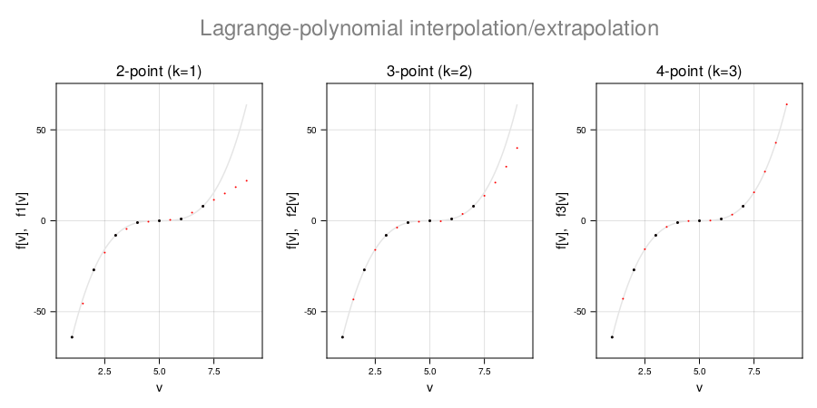

Application
Lagrange-polynomial interpolation/extrapolation
The Lagrange polynomial of degree k on a uniform grid is the polynomial running through k+1 subsequent points on the grid. We derive expressions for interpolation/extrapolation in both forward- and backward-difference notation. Beware that Lagrange interpolation becomes inaccurate if the tabulated function cannot be approximated by a polynomial of degree k.
Forward difference notation
Starting from the relation
\[f[n]=(1+Δ)f[n+1],\]
we obtain by formal operator inversion
\[f[n+1] = (1 + Δ)^{-1} f[n] ≡ \sum_{p=0}^{\infty}(-1)^p Δ^p f[n],\]
\[f[n+2] = (1 + Δ)^{-2} f[n] ≡ \sum_{p=0}^{\infty}(-1)^p pΔ^p f[n],\]
\[\vdots\]
where $k$ is called the order of the expansion and $n$ is the reference index. For interpolation position $n-σ$ (where σ may be real valued in index units) these expansions can be generalized to the form of lagrangian interpolation,
\[f[n-σ] = (1 + Δ)^{-σ} f[n] ≡ \sum_{p=0}^{\infty} α_p(σ) Δ^p f[n],\]
where
\[α_p(σ) ≡ (-1)^p(σ)_p/p!\]
is the $p^{th}$-order finite-difference expansion coefficient for lagrangian lagrangian interpolation over the interval $-k ≤σ ≤0\ \ (n \le n-σ \le n+k)$,
\[(σ)_{p}=\begin{cases} 1 & p=0\\ σ(σ+1)(σ+2)\cdots(σ+p-1) & p>0 \end{cases}\]
being the Pochhammer symbol CamiMath.pochhammer. For $σ$ outside the interpolation interval the method corresponds to extrapolation along the Lagrange polynomial. Evaluating the finite-difference expansion up to order $k$ we obtain
\[f[n-σ] =\sum_{p=0}^{k}α_p(σ)Δ^pf[n] =\sum_{j=0}^{k}F_j^k(σ)f[n+j] =F^k(σ) \cdot f[n:n+k],\]
where the $k+1$ weights
\[F_j^k(σ)= \sum_{p=j}^{k} (-1)^k α_p(σ) c_j^p =\sum_{p=j}^{k} (-1)^j \binom{p}{j}(σ)_p/p!\]
are the lagrangian interpolation weights corresponding to the point $f[n-σ]$.
Symmetry relation:
\[\bar{F}^k(-k-σ) = F^k(σ)\]
Weight functions:
fdiff_expansion_weights(polynom, fwd, reg) $→ F^k(σ) ≡ [F^k_0(σ),⋯\ F^k_k]$,
where the vector
polynom =fdiff_interpolation_expansion_polynom(σ, k, fwd) $→ α(σ) ≡ [α_0(σ),⋯\ α_k(σ)]$ contains the coefficients of the lagrangian-interpolation expansion.
Backward difference notation
Starting from the relation
\[f[n]=(1-∇)f[n+1].\]
we obtain by formal operator inversion
\[f[n+1] = (1 - ∇)^{-1} f[n] ≡ \sum_{p=0}^{\infty}∇^p f[n],\]
\[f[n+2] = (1 - ∇)^{-2} f[n] ≡ \sum_{p=0}^{\infty}p∇^p f[n],\]
\[\vdots\]
where $k$ is called the order of the expansion and $n$ is the reference index. For interpolation position $n-σ$ (where σ may be real valued in index units) these expansions can be generalized to the form of lagrangian interpolation,
\[f[n+σ] = (1 - ∇)^{-σ} f[n] ≡ \sum_{p=0}^{\infty} β_p(σ) ∇^p f[n],\]
where
\[β_p(σ) ≡ (σ)_p/p! = (-1)^p α_p(σ)\]
is the $p^{th}$-order finite-difference expansion coefficient for lagrangian interpolation over the interval $-k ≤σ ≤0\ \ (n-k \le n+σ \le n)$, with
\[(σ)_{p}=\begin{cases} 1 & p=0\\ σ(σ+1)(σ+2)\cdots(σ+p-1) & p>0 \end{cases}\]
being the Pochhammer symbol CamiMath.pochhammer. For $σ$ outside the interpolation interval the method corresponds to extrapolation along the Lagrange polynomial. Evaluating the finite-difference expansion up to order $k$ we obtain
\[f[n+σ] =\sum_{p=0}^{k}β_p(σ)∇^pf[n] = \sum_{j=0}^{k}B^k_j(σ)f[n-j] = \bar{B}^k(σ) ⋅ f[n-k:n],\]
where the $k+1$ weights
\[B^k_j(σ)= \sum_{p=j}^{k} β_p(σ) c_j^p\]
are the corresponding lagrangian interpolation weights.
Symmetry relations:
\[B^k(σ) = F^k(σ) = \bar{B}^k(-k-σ)\]
\[\bar{B}^k(σ) = B^k(-k-σ)\]
Weight function:
fdiff_expansion_weights(polynom, bwd, rev) $→ \bar{B}^k(σ) ≡ [B_k^k(σ),⋯\ B_0^k(σ)]$,
where the vector
polynom =fdiff_interpolation_expansion_polynom(σ, k=3, notation=bwd) $→ β(σ) ≡ [β_0(σ),⋯\ β_k(σ)]$ contains the coefficients of the lagrangian-interpolation expansion.
CamiDiff.fdiff_interpolation_expansion_polynom — Methodfdiff_interpolation_expansion_polynom(ξ::T [, k=3 [, notation=bwd]]) where T<:RealFinite-difference expansion coefficient vector defining the $k^{th}$-order (default third order) Lagrange-polynomial interpolation of a tabulated analytic function $f[n]$ at offset $ξ$ with respect to index position $n$, which is positive for increasing index and negative for decreasing index.
Forward difference notation (notation = fwd)
In this case we consider the tabulated interval $f[n:n+k]$. The interpolated value $f[n+ξ]$ is given by the forward-difference expansion
\[f[n+ξ] = \sum_{p=0}^k α_p(-ξ) Δ^p f[n] + ⋯,\]
where the expansion coefficients are given by
fdiff_interpolation_expansion_polynom(ξ, k, fwd) $→ α(-ξ) ≡ [α_0(-ξ),⋯\ α_k(-ξ)]$. In this notation the range $0\leq ξ\leq k$ corresponds to interpolation and the ranges $ξ<0$ and $ξ>k$ to extrapolation.
Backward difference notation (notation = bwd)
In this case we consider the tabulated interval $f[n-k:n]$. The interpolated value $f[n+ξ]$ is given by the backward-difference expansion
\[f[n+ξ] = \sum_{p=0}^k β_p(ξ) ∇^p f[n] + ⋯,\]
where the expansion coefficients are given by
fdiff_interpolation_expansion_polynom(ξ, k, bwd) $→ β(ξ) ≡ [β_0(ξ),⋯\ β_k(ξ)]$. In this notation the range $-k\leq ξ\leq0$ corresponds to interpolation and the ranges $ξ<-k$ and $ξ>0$ to extrapolation.
Examples:
k = 5
ξ = -1
α = fdiff_interpolation_expansion_polynom(ξ, k, fwd); println("α = $α")
β = fdiff_interpolation_expansion_polynom(ξ, k, bwd); println("β = $β")
α = [1, 1, 0, 0, 0, 0]
β = [1, 1, 1, 1, 1, 1]
ξ = 0
α = fdiff_interpolation_expansion_polynom(ξ, k, fwd); println("α = $α")
β = fdiff_interpolation_expansion_polynom(ξ, k, bwd); println("β = $β")
α = [1, 0, 0, 0, 0, 0]
β = [1, 0, 0, 0, 0, 0]
ξ = 1
α = fdiff_interpolation_expansion_polynom(ξ, k, fwd); println("α = $α")
β = fdiff_interpolation_expansion_polynom(ξ, k, bwd); println("β = $β")
α = [1, -1, 1, -1, 1, -1]
β = [1, -1, 0, 0, 0, 0]CamiDiff.fdiff_interpolation — Methodfdiff_interpolation(f::Vector{T}, v::V; k=3) where {T<:Real, V<:Real}Finite difference lagrangian interpolation (by default third order) at real position v (in index units) with respect to the elements of the uniformly tabulated analytic function f[1:N]. The interpolation points are situated on a Lagrange polynomial of degree $k$ (by default third degree) running through $k+1$ subsequenct points of the tabulated function. Outside the tabulated range, the method represents extrapolation on the lagrangian polynomial defined by the first/last $k+1$ tabulated points.
Beware that the interpolation becomes inaccurate if the tabulated function cannot be approximated by a polynomial of degree $k$.
Examples:
f = [1,2,3,4,5,6,7]
[fdiff_interpolation(f, v; k=3) for v=1:0.5:7]
[1.0, 1.5, 2.0, 2.5, 3.0, 3.5, 4.0, 4.5, 5.0, 5.5, 6.0, 6.5, 7.0]
f = [1,4,9,16,25,36,49]
[fdiff_interpolation(f, v; k=3) for v=1:0.5:7]
[1.0, 2.25, 4.0, 6.25, 9.0, 12.25, 16.0, 20.25, 25.0, 30.25, 36.0, 42.25, 49.0]
f = [x^3 for x=-4:2]
f1(v) = fdiff_interpolation(f, v; k=1)
f2(v) = fdiff_interpolation(f, v; k=2)
f3(v) = fdiff_interpolation(f, v; k=3)
[[f1(v),f2(v),f3(v)] for v=1:0.5:9]
[[-64.0, -64.0, -64.0], [-45.5, -43.25, -42.875], [-27.0, -27.0, -27.0],
[-17.5, -16.0, -15.625], [-8.0, -8.0, -8.0], [-4.5, -3.75, -3.375],
[-1.0, -1.0, -1.0], [-0.5, -0.5, -0.125], [0.0, 0.0, 0.0],
[0.5, -0.25, 0.125], [1.0, 1.0, 1.0], [4.5, 3.75, 3.375], [8.0, 8.0, 8.0],
[11.5, 13.75, 15.625], [15.0, 21.0, 27.0], [18.5, 29.75, 42.875],
[22.0, 40.0, 64.0]]The result for f3(v) is exact because the function is cubic and the expansion is third order - see Figure below. The tabulated function is given by the black points. The interpolation and extrapolation points are red.

Lagrangian differentiation
To derive the lagrangian differentiation formulas we formally differentiate
\[f[n+x] = (1 - ∇)^{-x} f[n]\]
with respect to $x$,
\[\frac{df}{dx}[n+x] =-ln(1-∇)\ (1-∇)^{-x}f[n] =\sum_{q=1}^{k}\tfrac{1}{q}∇^{q}\sum_{p=0}^{k}l_{p}(x)∇^{p}f[n]+⋯.\]
Rewriting the r.h.s. as a single expansion in powers of $∇$, we obtain
\[\frac{df}{dx}[n+x]=\sum_{p=1}^{k}β_p(x)∇^{p}f[n]+⋯,\]
where $β_p(x)$ represents the finite-difference expansion coefficients for lagrangian differentiation at position $n+x$. The coefficients $β_p(x)$ are obtained by polynomial multiplication using the function CamiMath.polynom_product(p1,p2), where $p_1$ and $p_2$ are CamiMath.polynom vectors. The resulting coefficients are contained in the following CamiMath.polynom vector of order $k$,
fdiff_differentiation_expansion_polynom(k,x) $→ β(x) ≡ [β_0(x),⋯\ β_p(x)]$, with $β_0(x)≡ 0$.
Substituting the finite-difference operators, the lagrangian derivative takes the form
\[\frac{df}{dx}[n+x] =\sum_{j=0}^{k}B_j^k(x)f[n-j] =B^k(x) ⋅ f[n:-1:n-k],\]
where the $k+1$ weights
\[ B_j^k(x)=\sum_{p=j}^{k}β_p(x)c_{j}^{p}\]
are the $k^{th}$-order lagrangian-differentiation weights
fdiff_expansion_weights(β, bwd, reg) $→ B^k(x) ≡ [B^k_0(x),⋯\ B^k_k(x)]$.
After changing dummy index to reverse the summation the expansion becomes
\[\frac{df}{dx}[n+x] =\sum_{j=0}^{k}\bar{B}^k_j(x)f[n-k+j] =\bar{B}^k(x) ⋅ f[n-k:n],\]
where
fdiff_expansion_weights(β, bwd, rev) $→ \bar{B}^k(x) ≡ [B^k_k(x),⋯\ B^k_0(x)]$.
CamiDiff.fdiff_differentiation_expansion_polynom — Methodfdiff_differentiation_expansion_polynom(ξ::T [, k=3 [, notation=bwd]]) where T<:RealFinite-difference expansion coefficient vector defining $k^{th}$-order lagrangian differentiation of the tabulated analytic function $f[n]$ at offset $ξ$ (with respect to index position $n$), which is positive for increasing index and negative for decreasing index.
Forward difference notation (notation = fwd)
\[\frac{df}{dξ}[n+ξ]=\sum_{p=0}^kα_p(ξ)Δ^{p}f[n]\]
Offset convention: $ξ = -σ$ with respect to index $n$ in tabulated interval $f[n:n+k]$
Backward difference notation (notation = bwd)
\[\frac{df}{dξ}[n+ξ]=\sum_{p=0}^kβ_p(ξ)∇^{p}f[n]\]
where $β(ξ) ≡ [β_0(ξ),\ ⋯,\ β_p(ξ)]$
Offset convention: $ξ = σ$ with respect to index $n$ in tabulated interval $f[n-k:n]$
Example:
k = 2; ξ = 0
o = fdiff_differentiation_expansion_polynom(ξ, k); println(o)
[0.0, 1.0, -1.5]CamiDiff.create_lagrange_differentiation_matrix — Methodcreate_lagrange_differentiation_matrix(k::Int)Lagrange differentiation matrix, $m[i,j]=s_{k-j}^k(i)$, for $k^{th}$-order lagrangian differentiation,
\[\frac{dy}{dx}[i]= \sum_{j=0}^{k}m[i,j]y[j],\]
Example:
k = 3
create_lagrange_differentiation_matrix(k)
4×4 Matrix{Rational{Int64}}:
-11//6 3//1 -3//2 1//3
-1//3 -1//2 1//1 -1//6
1//6 -1//1 1//2 1//3
-1//3 3//2 -3//1 11//6Integration
CamiDiff.trapezoidal_epw — Methodtrapezoidal_epw(k::Int [; rationalize=false [, devisor=false]])Endpoint weights vector $a=[a_1,⋯\ a_k]$ of trapeziodal rule optimized for functions of polynomial form,
\[ ∫_0^n f(x) dx = a_1 (f_0+f_n) + ⋯ + a_k (f_{k-1}+f_{n-k+1}) + (f_k+⋯+f_{n-k}),\]
where $k$ is odd. The rule is exact for polynonials of degree $d=0,\ 1, ⋯,\ k-1$. For $k=1$ the rule reduces to the ordinary trapezoidal rule. By default the output is in Float64, optionally the output is rational, with or without specification of the gcd devisor.
Example:
[trapezoidal_epw(k; rationalize=true, devisor=true) for k=1:2:9]
5-element Vector{Tuple{Int64, Int64, Vector{Int64}}}:
(1, 2, [1])
(3, 24, [9, 28, 23])
(5, 1440, [475, 1902, 1104, 1586, 1413])
(7, 120960, [36799, 176648, 54851, 177984, 89437, 130936, 119585])
(9, 7257600, [2082753, 11532470, 261166, 16263486, -1020160, 12489922,
5095890, 7783754, 7200319])CamiDiff.trapezoidal_integration — Methodtrapezoidal_integration(f, x1, x2, weights)Integral of the tabulated function $f=[f_0,⋯\ f_n]$ over the domain $x1 ≤ x ≤ x2$ using the optimized trapezoidal rule with endpoint correction by the weights vector weights,
\[ ∫_0^n f(x) dx = a_1 (f_0+f_n) + ⋯ + a_k (f_{k-1}+f_{n-k+1}) + (f_k+⋯+f_{n-k}).\]
The rule is exact for polynonials of degree $d=0,\ 1,⋯\ k-1$. For $k=1$ the rule reduces to the ordinary trapezoidal rule (weights = [1/2]).
Examples::
p = 3
c = [1 for i=0:p]
pol = ImmutablePolynomial(c,:z)
Ipol = integrate(pol)
n = 10
x1=0.0
x2=5.0
x = collect(range(x1, x2, n))
f = pol.(x .-2.5)
w3 = trapezoidal_epw(3)
trapezoidal_integration(f, x1, x2, w3)
15.416666666666673
Ipol(2.5)-Ipol(-2.5)
15.41666666666666Adams Method
Adams-Bashford expansion
The Adams-Bashford integration step is given by the expansion
\[y[n+1]-y[n] = -\frac{h ∇}{(1-∇)ln(1-∇)}f[n+1]=h (\sum_{p=0}^{\infty}B_p∇^p)f[n+1].\]
A closed expression for the Adams-Bashford expansion coefficients, $B_k$, is not available. As we already have a finite-difference expansion for the operator $(1-∇)^{-1}$,
\[\frac{1}{1-∇}≡\sum_{p=0}^{\infty}∇^p,\]
we ask for the expansion of
\[-\frac{∇}{ln(1-∇)} =(1-\frac{1}{2}∇-\frac{1}{24}∇^2-\frac{1}{12}∇^3+⋯)f[n+1] = (\sum_{p=0}^{\infty}b_p∇^p)f[n+1].\]
This is known as the Adams-Moulton expansion. Its expansion coefficients are calculated numerically by the function fdiff_adams_moulton_expansion_polynom(k). The Adams-Bashford expansion is obtained as the polynomial product of the two expansions,
\[(\sum_{p=0}^{\infty}B_p∇^p)f[n+1] =(\sum_{p=0}^{\infty}∇^p)(\sum_{p=0}^{\infty}b_p∇^p)f[n+1] =\ ( 1 + \frac{1}{2}∇ + \frac{5}{12}∇^2 + ⋯)f[n+1]\]
where the vector $β = [B_0,⋯\ B_k]$ contains the Adams-Bashford expansion coefficients, rational numbers generated numerically by the function fdiff_adams_bashford_expansion_polynom(k). Evaluating the finite-difference expansion up to order $k$ we obtain (after changing dummy index bring the summation in forward order)
\[\sum_{p=0}^{k}B_p∇^pf[n] =\sum_{p=0}^{k}B_p\sum_{j=0}^{p} c_j^if[n-j] = \sum_{j=0}^{k}A_j^kf[n-j] = \sum_{j=0}^{k}A_{k-j}^kf[n-k+j],\]
where the $A_j^k= \sum_{p=j}^{k} B_pc_j^p$ are the $(k+1)$-point Adams-Bashford integration weights.
Function:
β = fdiff_adams_bashford_expansion_polynom(k) $→ [B_0,⋯\ B_k]$
adams_bashford_weights = fdiff_expansion_weights(β, bwd, rev) $→ [A_k^k,⋯\ A_0^k]$
adams_bashford_weights = create_adams_bashford_weights(k) $→ [A_k^k,⋯\ A_0^k]$
CamiDiff.fdiff_adams_bashford_expansion_polynom — Methodfdiff_adams_bashford_expansion_coeff(k::Int [; T=Int [, msg=true]])
fdiff_adams_bashford_expansion_polynom(k::Int [; T=Int [, msg=true]])$(k+1)$-point Adams-Bashford expansion coefficients $B_k \equiv [B_0^k,⋯\ B_k^k]$. Note the forward vector ordering, which is the order of use in the summation below,
\[-\frac{∇}{(1-∇)ln(1-∇)}=\sum_{p=0}^{\infty}B_p∇^p=1+\ \frac{1}{2}∇+\ \frac{5}{12}∇^2+\ ⋯.\]
Examples:
julia> o = fdiff_adams_bashford_expansion_polynom(5); println(o)
Rational{Int64}[1, 1//2, 5//12, 3//8, 251//720, 95//288]
julia> fdiff_adams_bashford_expansion_coeff(0)
1//1
julia> fdiff_adams_bashford_expansion_coeff(5)
95//288
julia> fdiff_adams_bashford_expansion_coeff(20)
Integer-overflow protection: output converted to BigInt
8136836498467582599787//33720021833328230400000CamiDiff.create_adams_bashford_weights — Methodcreate_adams_bashford_weights(k::Int [; rationalize=false [, devisor=false [, T=Int]]])$k^{th}$-order Adams-Bashford weights vector $b^k \equiv[b_k^k,⋯\ b_0^k]$. Note the reversed order, which corresponds to the order of use in the summation below,
\[y[n+1] = y[n] + \frac{1}{D}\sum_{j=0}^{k}b^k[j]f[n+1-k+j],\]
where $b^k[j] \equiv b_{k-j}^k$. The $b_j^k$ are the Adams-Bashford weight coefficients, with $D$ the corresponding Adams-Moulton divisor. By default the output is in Float64, optionally the output is rational, with or without specification of the gcd devisor.
Example:
julia> [create_adams_bashford_weights(k; rationalize=true, devisor=true, T=Int) for k=1:5]
8-element Vector{Tuple{Int64, Int64, Vector{Int64}}}:
(1, 2, [-1, 3])
(2, 12, [5, -16, 23])
(3, 24, [-9, 37, -59, 55])
(4, 720, [251, -1274, 2616, -2774, 1901])
(5, 1440, [-475, 2877, -7298, 9982, -7923, 4277])
julia> k = 5;
julia> w = create_adams_bashford_weights(k; rationalize=true, devisor=true); println(w)
(5, 1440, [-475, 2877, -7298, 9982, -7923, 4277])
julia> w = create_adams_bashford_weights(k; rationalize=true, devisor=false); println(w)
Rational{Int64}[-95//288, 959//480, -3649//720, 4991//720, -2641//480, 4277//1440]
julia> w = create_adams_bashford_weights(k; rationalize=false); println(w)
[-0.3298611111111111, 1.9979166666666666, -5.0680555555555555, 6.9319444444444445, -5.502083333333333, 2.970138888888889]Adams-Moulton expansion
The Adams-Moulton integration step is given by the expansion
\[y[n+1]-y[n] = -\frac{∇}{ln(1-∇)}f[n+1] = ( 1 - \frac{1}{2}∇ - \frac{1}{12}∇^2 - \frac{1}{24}∇^3 +⋯)f[n+1].\]
For the evaluation of the integration step we limit the summation to $k+1$ terms (order $k$),
\[y[n+1]-y[n]= (\sum_{p=0}^{k}b_p∇^p)f[n+1]+⋯.\]
where the vector $β = [b_0,⋯\ b_k]$ contains the Adams-Moulton expansion coefficients, rational numbers generated numerically by the function fdiff_adams_moulton_expansion_polynom(k). Extracting the greatest common denominator, $1/D$, the step becomes
\[y[n+1]-y[n]= \frac{1}{D}(\sum_{p=0}^{k}b_p′∇^p)f[n+1]+⋯,\]
where $b_0′,⋯\ b_k′$ are integers and $b_p=b_p′/D$. In practice the expansion is restricted to $k<18$ (as limited by integer overflow). Note that this limit is much higher than values used in calculations (typically up to $k = 10$). Evaluating the finite-difference expansion up to order $k$ we obtain (after changing dummy index bring the summation in forward order)
\[\sum_{p=0}^{k}b_p∇^pf[n] =\sum_{p=0}^{k}b_p\sum_{j=0}^{p} c_j^if[n-j] = \sum_{j=0}^{k}a_j^kf[n-j] = \sum_{j=0}^{k}a_{k-j}^kf[n-k+j],\]
where the $a_j^k= \sum_{p=j}^{k} b_pc_j^p$ are the $(k+1)$-point Adams-Moulton integration weights.
Functions:
β = fdiff_adams_moulton_expansion_polynom(k) $→ [b_0,⋯\ b_k]$
adams_moulton_weights = fdiff_expansion_weights(β, bwd, rev) $→ [a_k^k,⋯\ a_0^k]$.
adams_moulton_weights = create_adams_moulton_weights(k) $→ [a_k^k,⋯\ a_0^k]$
CamiDiff.fdiff_adams_moulton_expansion_polynom — Methodfdiff_adams_moulton_expansion_coeff(k::Int; T=Int, msg=true)
fdiff_adams_moulton_expansion_polynom(k::Int; T=Int, msg=true)Finite difference expansion coefficient vector $β ≡ [β_0(x),\ ⋯,\ β_k(x)]$. Note the forward vector ordering, which is the order of use in the summation below,
\[-\frac{∇}{ln(1-∇)} = \sum_{p=0}^{\infty}β_p∇^p = 1 - \frac{1}{2}∇ - \frac{1}{12}∇^2 - \frac{1}{24}∇^3 +⋯.\]
Examples:
julia> k = 5;
julia> β = fdiff_adams_moulton_expansion_polynom(k); println(β)
Rational{Int64}[1//1, -1//2, -1//12, -1//24, -19//720, -3//160]
julia> fdiff_adams_moulton_expansion_coeff(k)
-3//160
julia> D = denominator(gcd(β))
1440
julia> convert(Vector{Int},(β .* D)); println(o)
[1440, -720, -120, -60, -38, -27]
julia> k = 20;
julia> fdiff_adams_moulton_expansion_coeff(k)
Integer-overflow protection: output converted to BigInt
-12365722323469980029//4817145976189747200000CamiDiff.create_adams_moulton_weights — Methodcreate_adams_moulton_weights(k::Int [; rationalize=false [, devisor=false [, T=Int]]])$k^{th}$-order Adams-Moulton weights vector $a^k \equiv[a_k^k,⋯\ a_0^k]$. Note the reversed vector ordering, which is the order of use in the summation below,
\[y[n+1] = y[n] + \frac{1}{D}\sum_{j=0}^{k}a^k[j]f[n+1-k+j],\]
where $a^k[j] \equiv a_{k-j}^k$. The $a_j^k$ are the Adams-Moulton weight coefficients and $D$ is the corresponding Adams-Moulton divisor. By default the output is in Float64, optionally the output is rational, with or without specification of the gcd devisor.
Example:
julia> [create_adams_moulton_weights(k; rationalize=true, devisor=true, T=Int) for k=1:5]
8-element Vector{Tuple{Int64, Int64, Vector{Int64}}}:
(1, 2, [1, 1])
(2, 12, [-1, 8, 5])
(3, 24, [1, -5, 19, 9])
(4, 720, [-19, 106, -264, 646, 251])
(5, 1440, [27, -173, 482, -798, 1427, 475])
julia> k = 5;
julia> w = create_adams_moulton_weights(k; rationalize=true, devisor=true); println(w)
(5, 1440, [27, -173, 482, -798, 1427, 475])
julia> w = create_adams_moulton_weights(k; rationalize=true, devisor=false); println(w)
Rational{Int64}[3//160, -173//1440, 241//720, -133//240, 1427//1440, 95//288]
julia> w = create_adams_moulton_weights(k; rationalize=false); println(w)
[0.01875, -0.12013888888888889, 0.3347222222222222, -0.5541666666666667, 0.9909722222222223, 0.3298611111111111]